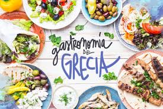
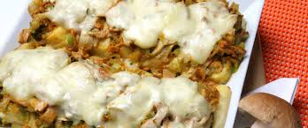
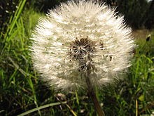

-GASTRONOMÍA-

La cocina griega es citada como un ejemplo de dieta mediterránea. Tiene influencias de la italiana, balcánica y turca. Los vegetales están entre los ingredientes más utilizados en la gastronomía griega, principalmente el tomate, la berenjena, la patata, las judías verdes, la cebolla, el pimiento y la espinaca. La carne de cordero es la más utilizada, sólo superada por el pescado en las zonas costeras. El aceite de oliva se utiliza para cocinar y aderezar la mayoría de los platillos. A partir de la leche de cabra se preparan distintos tipos de quesos, como el feta, kefalotyri, kasseri y mizithra.También se utiliza para elaborar el yogur griego, que ha ganado popularidad internacional por ser más cremoso y denso que otras variedades de yogur, además de que se utiliza para la elaboración de sopas, ensaladas, platos fuertes y postres.
Algunos de los platos locales más populares son: la musaca, un horneado con capas de carne y berenjena bañado en salsa de tomate; el gyros, una especie de sándwich con carne, salsa tzatziki y otros vegetales a elección, el stifado, un guiso de carne de res con cebollitas; la spanakopita, un pastel salado relleno de queso feta y espinacas; y el souvlaki, carne cocinada con vegetales, salsa de yogur, patatas y aderezos. Entre los platillos dulces está el galaktoboureko, el baklava y el kataifi. Las bebidas tradicionales griegas incluyen el ouzo, el metaxá y una variedad de vinosincluyendo el retsina.